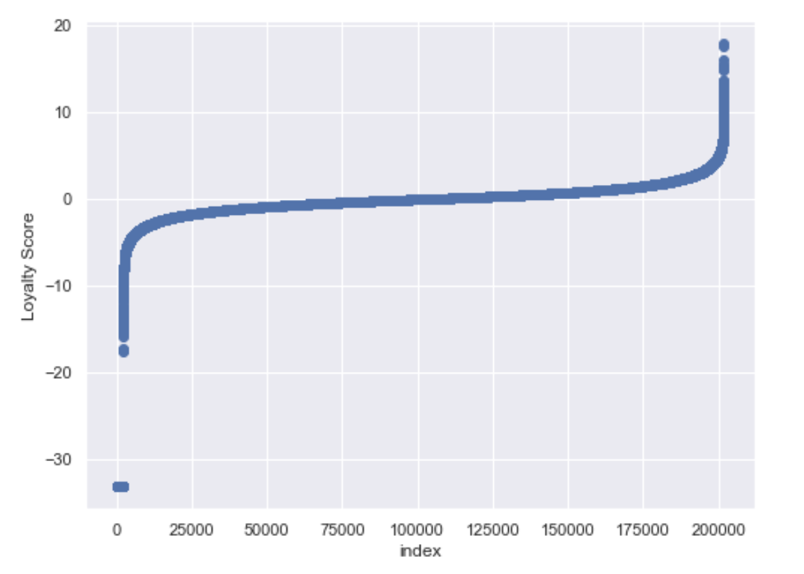
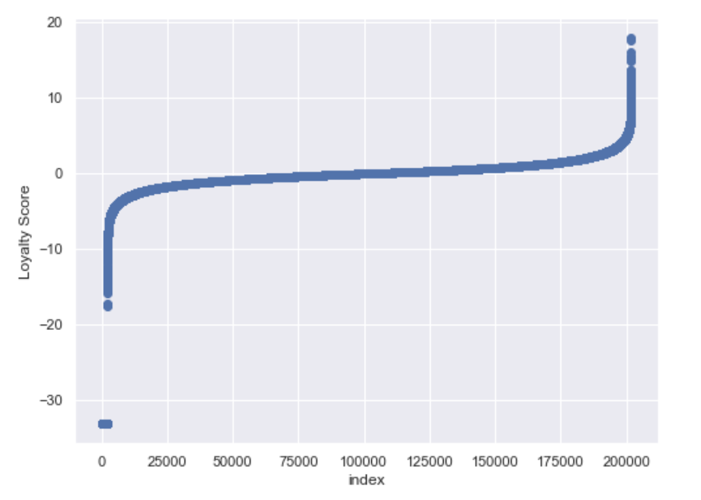

Fig 1. Below shows the histogram and scatter plot of loyalty scores of the customers in the train set. We can see that some of the loyalty values are far apart (less than -30) compared to others. We have about 2207 rows, which has values different from the rest. Even if those rows were remove from the data, the model performance was not better. So the rows were not dropped.
 

Fig 2. Below is the bar chart of the features in the train set.

Bar graphs represents the 3 feature columns in the dataset and their categories count.
Feature 1 has 5 categories, feature 2 has 3 categories and feature 3 has 2 categories.
The violin plot shows the distribution of the different categories in all three features. Looking at the graph the distribution of categories looks kind of similar.
Feature 1 has 5 categories, feature 2 has 3 categories and feature 3 has 2 categories.
The violin plot shows the distribution of the different categories in all three features. Looking at the graph the distribution of categories looks kind of similar.
Fig 3. Below graph shows the violin plot for the columns in train dataset.


Fig 4. Below graph shows the count of first active month customers

The graph shows the trends of customers using cards from 2012 to 2018. It can be seen that for train and test data the trend looks similar. The development seen to be slowly rising from 2014 to year 2017. But in year 2018, there is a sharp declined in using cards.
Fig 5. Distribution of month lag where customers delayed the payment for their transactions.

We can see that the most of the customers delayed their payment till second/third months of their purchases.
Fig 6. Explore the merchant dataset.

We can see that the most of the customers delayed their payment till second/third months of their purchases.